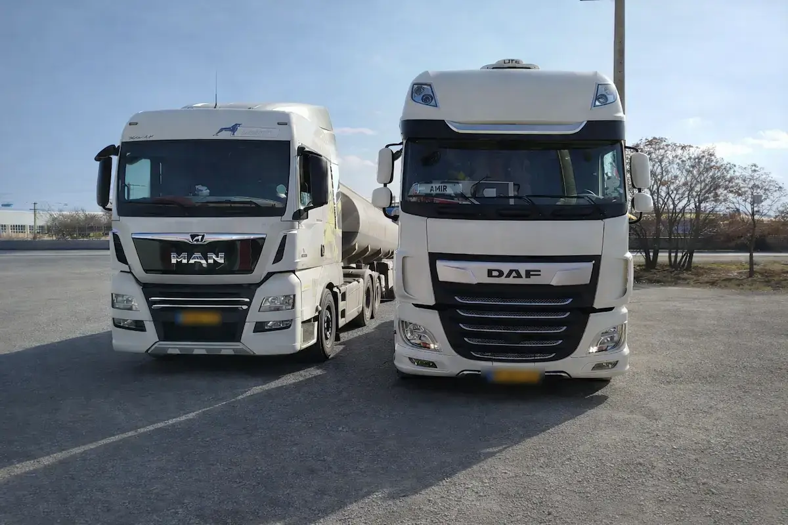

دیاگ و عیب یابی
- عیب یابی تخصصی با دستگاه های اصلی و به روز
- دیاگ و ریمپ خودروهای سنگین چینی از جمله : فورس، یوجین، جک، دایون، فوتون، دیما، شاکمان، و...
- قطع ادبلو با برنامه اصلی و بدون خطا
- کارشناسی فنی و تشخیص دقیق مشکلات